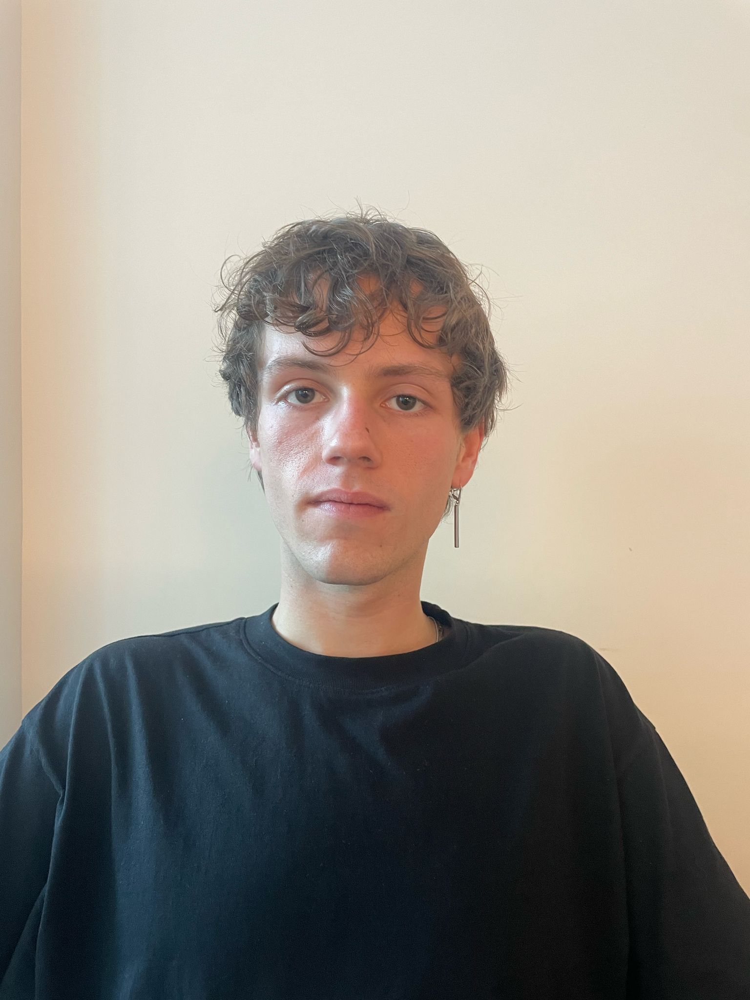

QUESTO E alessando un ragazzo semplice:

Alessandro Popa è un giovane ragazzo di Torvajanica con un sogno semplice ma potente: portare in tavola il sapore vero del mare. Cresciuto tra le onde del litorale romano e i profumi della cucina di casa, Alessandro ha sempre avuto un legame speciale con il cibo, quello sincero, fatto con il cuore.
Fin da piccolo osservava con curiosità i gesti dei nonni ai fornelli, imparando che la cucina è fatta di tempo, attenzione e amore. Con il passare degli anni, quella passione è diventata un progetto, poi un obiettivo, e oggi finalmente realtà: il suo ristorante sul lungomare di Torvajanica.
Aperto con entusiasmo, fatica e il sostegno di amici e famiglia, il locale riflette chi è Alessandro: giovane ma radicato nella tradizione, creativo ma rispettoso dei sapori autentici. Ogni piatto del suo menù racconta una storia, fatta di mare, stagioni, territorio e identità.
Per Alessandro, cucinare non è solo un lavoro. È un modo per far star bene le persone, per celebrare la semplicità, e per far sentire ognuno a casa, anche a pochi passi dalla riva.